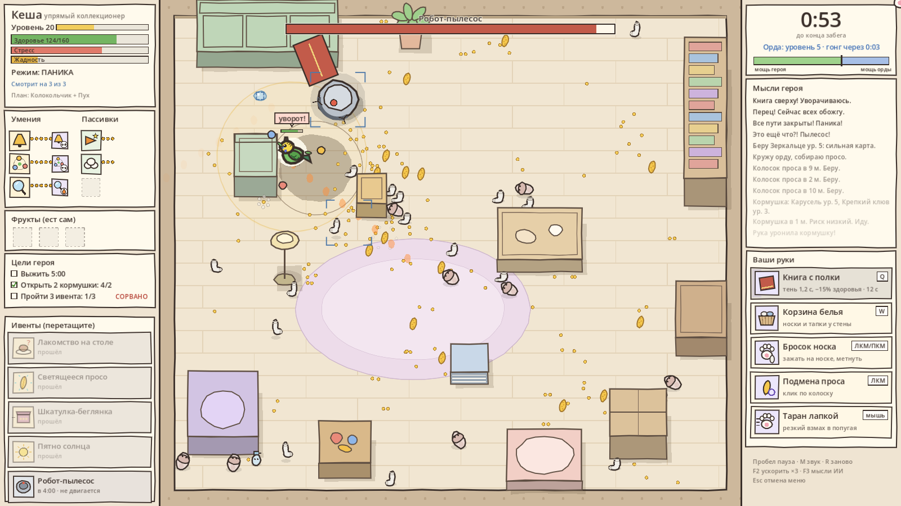
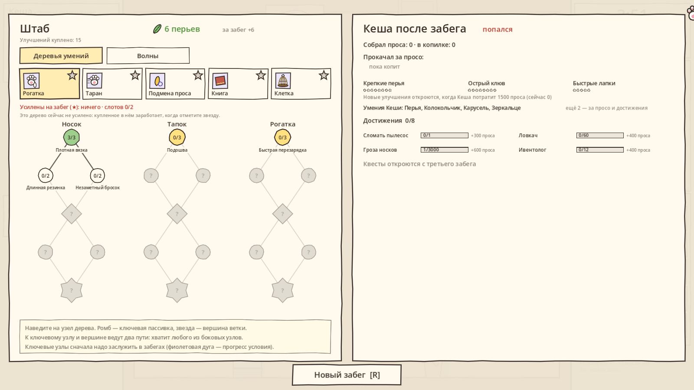
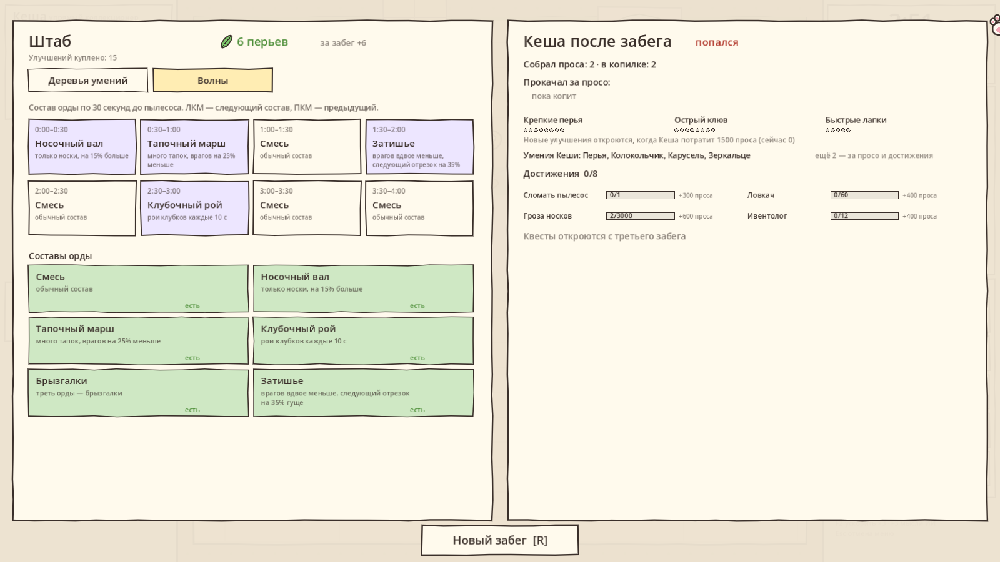
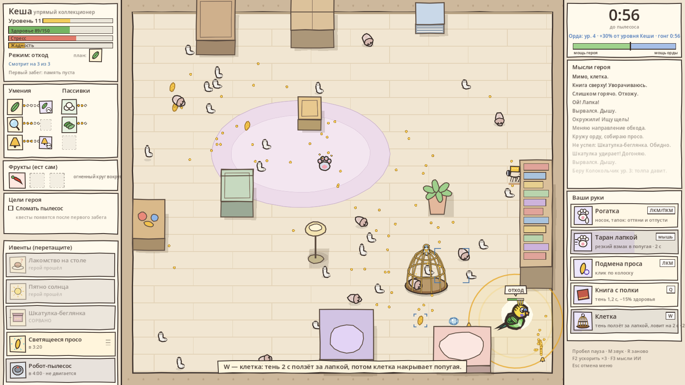
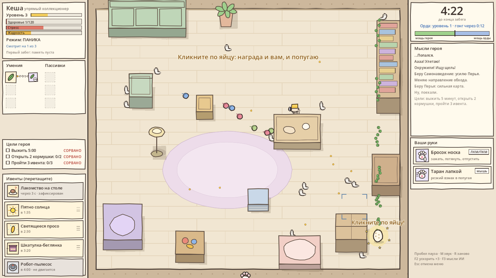

Попугай наоборот
Vampire Survivors наоборот. Выживает волнистый попугай Кеша — игровой ИИ, который сам бегает, клюёт носки и выбирает умения. Вы — орда и кошачья лапка, и ваша цель — поймать его, пока он не сломал робота-пылесоса.
Играть в браузере
Нужна мышь и клавиатура. Сохранение — в браузере.

Попугай думает сам
Три слота внимания, поля опасности и интереса, жадность и стресс. Он учится между забегами: помнит, что его било, и меняет план.
Вы — орда и лапка
Рогатка из носков и тапок, таран лапкой, подменённое просо, книга с полки и клетка, которая ползёт за курсором.
Долгая мета
Штаб с деревьями умений, ключевые пассивки за достижения, состав волн. Попугай тоже копит просо и открывает новые умения.
Управление
| Рогатка | зажать ЛКМ на носке или тапке, оттянуть лапку назад и отпустить |
| Таран | резкий рывок мышью в попугая (с 0:20) |
| Подмена проса | ЛКМ по крупному колоску: капкан, тухлое, яйцо, снаряд |
| Книга / клетка | Q с 2:00 / W с 3:00 |
| Запрет умения | когда попугай выбирает умение, кликните одну из трёх карт |
| Пауза, звук, заново | Пробел, M, R · F2 ускорить, F3 мысли ИИ |
Кадры



